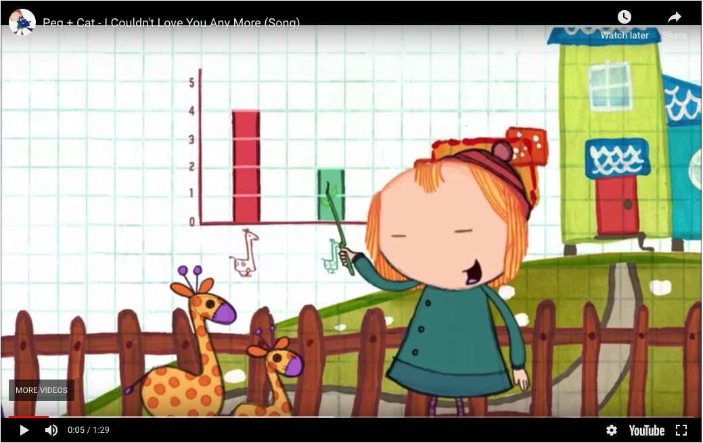

Please see the Land Acknowledgment in the Syllabus.
More information can be found on the Chancellor’s Website.
Please see the statement about policies related to COVID-19 at the top of the Syllabus.
Please see the statement about policies related to COVID-19 at the top of the Syllabus.
notes: So, all of this isn’t news to anybody probably but a few things to be aware of
Please see the statement about policies related to COVID-19 at the top of the Syllabus.
notes: which brings us to – other ways to access materials
Please see the statement about policies related to COVID-19 at the top of the Syllabus.
notes: which brings us to, finally – if you feel unwell, stay home!
This includes if you feel anxious/just a cold… attendance… make best choices for self… etc
Please see the statement about policies related to COVID-19 at the top of the Syllabus.
notes: we do have plans in place for if I get covid… could be out for a while… recordings/online
See for-credit IS400 Colloquium and your academic advisor for more info.
notes: ok, onto more burocracy, but not Covid stuff for a change!
Just a heads up there is a colloqium if you want to learn more about folk’s research
125+ across two sections!
Strategies:
notes: so, we have 125 students in this class across two sections, this is a large class!
we will go over some of these strategies in detail, but I wanted to give you an overview of somethings that we are doing to cover everybody AND some things you can do to help us and your fellow classmates out
the first thing is we have an extra 12 hours of help time outside of class to answer questions in the form of office hours (more details next slide)
also, we will have a Slack channel (more on that in a moment) where you can get more quick responses from the instructional team if you post in the #general channel
finally, we have several assignments that can be turned in as a group to allow for collaboration between folks in the class, AND across class sections – we’ll talk about those assignments as we come to them
IN PERSON: 12:30-3:20PM Tuesdays
Jill P. Naiman - jnaiman@illinois.edu
TA: Qiuyan Guo - qqguo2@illinois.edu
TA: Leon Hounnou - hounnou2@illinois.edu
IN PERSON: https://uiuc-ischool-dataviz.github.io/is445_bcubcg_fall2022/
notes:
Here are those 12 hours of office hours for you.
So you see that we have LOTS of office hours throughout the week – this is with the idea that folks may be in and out of class as illness/etc happens (but hopefully doesn’t!)
TA’s introduce themselves if they are on Zoom
Again, we want to make sure there are lots of support for folks that have questions
Note that we have a shared canvas space across two sections (more on that in a moment) but seperate webpages where materials are
Now, the website! go through website!!
Canvas: https://canvas.illinois.edu/courses/21951 - where the grades and assignments will be posted
Course webpage: https://uiuc-ischool-dataviz.github.io/is445_bcubcg_fall2022/ - where lecture slides, notebooks, data & general course info will live.
Slack: https://is445fall2022.slack.com - the best place to ask questions in the #general channel


Naiman et al. 2017, Borkiewicz et al. 2018

Naiman et al. 2017, Borkiewicz et al. 2018

Naiman et al. 2017, Borkiewicz et al. 2018

Naiman et al. 2017, Borkiewicz et al. 2018

Naiman et al. 2022, TPDL conference
notes: also do some science digitization, i.e. trying to turn scans of old scientific figures back into data by having computers “read” objects and axis labels using image processing, optical character recognition and machine learning methods
On a piece of paper or in notes on your computer:
notes: We’re going to use these pieces of data to explore how we might approach visualization. Each of these items is a different type of data – qualitative, quantitative, elements drawn from sets, and sets of numerical data.
Trying to visualize each one will give us a basic idea of how we might think about these types of data, and how we approach visualizing them.
Visualize the results of your group’s collective “data”.
Don’t forget to say hi to eachother!
notes:
What was easy/hard about visualizing the various datasets? How did you do it?
Feel free to do this on your own if you are more comfortable that way.
We have to do it!
NOTE - you might want to wait until break to do this.
see: https://uiuc-ischool-dataviz.github.io/is445_bcubcg_fall2022/week01/installation_instructions.html
notes: This is a rough syllabus! These are many of the topics we will cover, but based on how the course proceeds and how folks respond, we may shorten or lengthen different topics.
The organization here is designed to start out slow, dealing with how to program python for visualization, understanding how data is laid out, which operations we can apply to that data, and then moving on to representing data in different ways.
We might start getting into javascript earlier, depending on how we are doing.
Please be aware! I will be at a conference during week #5, but we will have recordings of the material from last semester for you all to look at and I will be available on Slack that week as well
notes: Toward the end of class we are going to have a slightly more free-form set of discussion points. Your final projects will be somewhat open-ended, requiring more group work and collaboration than the preceding assignments.
Here the weeks get a little off between the in-person and online classes because of the election day holiday and this is also reflected in the Canvas page. We’ll be working on final project stuff then, so it shouldn’t be an issue too much.
notes: basically, we’ll start with the basics - I’m assuming you are coming in with Python experience
IS430 with a programming project
or
IS205 + one more Python-based programming class
or
Equivalent informal Python background
notes: so what do I mean by “python experience”? Here are some rough guidelines for courses
Since there are no enforced pre-reqs, you can also get Python experience in industry as well
Basically, I’m expecting that you understand all the logical operations like if-then, for loops, are comfortable using external libraries, and reading/writing and manipulating data to some extent – check out the prep notebooks for the level that is expected
IS430 with a programming project
or
IS205 + one more Python-based programming class
or
Equivalent informal Python background
Extra coding help: https://ischool.illinois.edu/student-life/academic-support-center (see Tutoring by Subject and Skill)
notes: that being said, I have had students that were just starting off in their programming journeys be successful in this class, but just be aware its going to require extra time commitement
In addition to all of the hours of office hours, you should check out the academic support center, in particular the Tutoring by Subject and Skill where you can find Python tutors
While you are already a consumer of visualizations, your perspective should change to that of a producer of visualizations. You should be comfortable reading AND writing imagery.
notes: We will be discussing this as the semester goes on, but the principal outcome I want you to take away from this class is understanding how to transform data into its visual representation, and to take that understanding with you as you observe visualizations presented to you.
By developing visualizations, you will grow to understand the choices that influence those visualizations, and you will bring that with you while consuming information visually.
notes: This course will teach you some things about how to code, how to build visualizations, but we’re going to focus much more on learning about how to construct visualizations and why we make the choices that we do. If we choose one way to present data, does that convey information more readily? Or does it get in the way of the underlying meaning?
(Today will be a little lecture heavy)
notes: This structure will likely be deviated from during the course, but in general we will start with lecture, take a break, then continue with collaborative or hands-on exercises using group coding.
During the group coding, I might lead the class in some visualization in Python, Javascript, or something else. During this section, I expect that students will follow along with what is going on – typing in the specific commands, and maybe even trying different things as we go. It is not meant to simply be a “performance” of coding, but instead an opportunity to learn.
YOU HAVE THE NOTES BEFORE CLASS.
notes: Your weekly assignments will take different forms. The first assignment will be mostly prose and hand-writing with some installations, but subsequent assignments will be either notebook (coding) based or prose-based as well.
The final project will be described later in class, but will take the form of a group project that touches on coding as well as visual design.
Every week, you are to turn in a visualization you have found in the media (newspapers, magazines, online journalism) and a brief summary of something you like/don’t like, think is interesting, etc.
These are meant to be easy points: No more than 2-3 sentences are needed in your description.
Each week, one of you will at random be asked to describe the visualization you picked to the class.
See the course syllabus:
https://uiuc-ischool-dataviz.github.io/is445_bcubcg_fall2022/syllabus.html
notes: These are TOTally optional - more on that in a minute.
notes: When programming, I expect that you will do things like search on the internet to find help with a given problem. This is fine.
But, you must cite where any code snippets came from. And you must note if you are working with other people in the group!
Using snippets of code is fine – but you may not copy large-scale amounts of code from other work (for example, other visualizations) and pass it off as your own. Always cite, and be reasonable in what you utilize.
TurnItIn is meant to help you with this process (for specific file types).
notes: turnitin is turned on for all assignments, but you can see your report right after you submit IF ITS THE RIGHT FILE TYPE
Depending on file type reports may/may not be supported (for example, its not supported for notebook files)
Click on “Submission Details” to see your report, but again, this will only work for specific kinds of files.
notes: You will be expected to write code in Python, and to learn the very basics of Javascript. Your projects may be turned in via git. We will also utilize Slack for class communication.
In approximate order:
There’ll be a few more along the way.
notes: This class is not meant to teach you a given tool, but instead a way of thinking about using visualization tools. These tools are chosen because of what they represent, not because they are the only paths to success.
notes: These tools represent many different ways to explore and visualize data. We’ll use a mix of local installations & web-services.
We will be sharing a slack channel with the in-person class, so feel free to converse with them as well!
https://is445fall2022.slack.com
#general : General announcements, place to ask questions#bcg-bcu-inperson : in-person section-specific questions#oag-oau-online : online section-specific questions#random : see a cool viz you want to share? This is the place!#introduces : where you want to “say hi” for Homework #1@ sign appropriately: @[person], @here, @channelnotes: Please use slack as much as you need! You can use it to share items and articles with the class, to collaborate, to discuss and ask questions and get feedback. However, please do behave in a professional fashion.
@ sign appropriately: @[person], @here, @channelSlack turn-around time ~24 hours or less (general/section channel), email ~3 days or less
Questions about grades should always be over email.
notes: We aim for turn-around times for slack to be 24 hours or less when questions are posted to the general channel for others to see/comment on
personal questions (like about grades) should be over email
personal messages on slack will be treated as email and we’ll get back to you within 3 days or less
notes: All the materials for this course will be stored in github, and are available under a very permissive license. It is largely written in markdown and automatically compiled to web pages when changes are made.
You are invited to clone the repo, fork and submit changes (typos, etc!), and to use any information in it in the future.
There are 3 pathways (that I can see in this course, could be more!)
There are 3 pathways (that I can see in this course, could be more!)
There are 3 pathways (that I can see in this course, could be more!)
There are 3 pathways (that I can see in this course, could be more!)

notes: there is a huge overlay of topics that cover data viz - from the neurology of how your prefrontal cortex process information, to how humans process storytelling, to data analytics, and color theory and the list goes on!

notes: this is another way of looking at this.
here is the overall diagram of the things we’ll cover in this class – you can see there are a lot of topics from different areas and they are all interconnected.

notes: We’re going to start out at a very high-level, discussing why we choose to visualize versus other types of representation, what types of data, and how we might do it.
“Computer-based visualization systems provide visual representations of datasets designed to help people carry out tasks more effectively.”
notes: I really like this definition because it gives us a sense of purpose - i.e. that our visualization must help a human with a task that has to do with data.
“Computer-based visualization systems provide visual representations of datasets designed to help people carry out tasks more effectively.”
Data Viz is task oriented:

notes: here for example, we might want to know the labels of bones or how they fit together
“Computer-based visualization systems provide visual representations of datasets designed to help people carry out tasks more effectively.”
… versus artistic representations used to convey emotions:

“Computer-based visualization systems provide visual representations of datasets designed to help people carry out tasks more effectively.”
… versus movies, comics, or other cinematic representations used to tell stories:

notes: we will be using artistic concepts and elements of storytelling, BUT that is not our focus – here we are TASK oriented.
(Or rather, why wouldn’t we visualize?)
notes: Not everything suits itself to visualization – and part of the reason for that is the necessary reductionism that visualization can require.
Peg + Cat: https://www.youtube.com/embed/In72QAQJ1tY?rel=0
notes: “There are lots of thing you can compare on a graph / Like who is the shortest or the tallest giraffe / You can chart how much you walk / How much that you laugh / There are lots of things you can compare on a graph”
“But the one thing you can’t chart / Is how you feel in your heart”
Peg + Cat: https://www.youtube.com/embed/In72QAQJ1tY?rel=0

“There are lots of thing you can compare on a graph / Like who is the shortest or the tallest giraffe…”
notes: “There are lots of thing you can compare on a graph / Like who is the shortest or the tallest giraffe / You can chart how much you walk / How much that you laugh / There are lots of things you can compare on a graph”
“But the one thing you can’t chart / Is how you feel in your heart”
Peg + Cat: https://www.youtube.com/embed/In72QAQJ1tY?rel=0

“But the one thing you can’t chart / Is how you feel in your heart”
notes: “There are lots of thing you can compare on a graph / Like who is the shortest or the tallest giraffe / You can chart how much you walk / How much that you laugh / There are lots of things you can compare on a graph”
“But the one thing you can’t chart / Is how you feel in your heart”

notes: for example, here is a haptic, or touch based “visualization” for the blind & visually impaired

notes: you should check it out, because its a thing we are also not going to cover!
notes: Visual information is communicated through our eyes, where it is processed. At the most basic level, we can see a range of about 210 degrees horizontally with one or both eyes. The region that is covered by both (“binocular”) is about 114 degrees in extent.
You can only cram so much information into the human eye.

By Vanessa Ezekowitz CC BY-SA 3.0, via Wikimedia Commons
notes: When we think about visual communication of information, we must think about how human physiology interacts with that communication.
Also, fair warning: I’m not a medical doctor.
This diagram shows the visual acuity of a “standard” human eye, as a function of angular distance from the fovea. We have to think about this in conjunction with our field of view.
There are 12 dots, can you count them all at the same time?
(You should bring up the slides yourself to see these optical illusions)
Step 1: Look at the cross
Step 2: Close left eye, keep looking at the cross
Step 3: Slowly move your head toward & away from screen until dot disappears
(You should bring up the slides yourself to see these optical illusions)
Step 1: Look at the cross
Step 2: Close left eye, keep looking at the cross
Step 3: Slowly move your head toward & away from screen until dot disappears
Your visual cortex is processing information from different parts of this page AT THE SAME TIME which means it can do impressive things very quickly.
Can you spot the differences?

notes: compare this to how long it would take to spot differences in 2 songs - you’d have to listen to both songs (probably more than once) and compare after! This would be sequential rather than parallel data transfer!
Try doing the same thing with these on your own!
notes: time this activity, give them 1.5 minutes
ask: how long did this take you? How many differences were there? I spotted tempo as one (but you can cheat by looking at the timer on the bottom!)
Also, you can look at how different each of the sound-bars are on each link and see how different the music looks visually!
notes: (This part is a bit of a stunt. Sorry.)
Read these numbers:
| 2007-01-01 | 14233.2 |
| 2007-04-01 | 14422.3 |
| 2007-07-01 | 14569.7 |
| 2007-10-01 | 14685.3 |
| 2008-01-01 | 14668.4 |
| 2008-04-01 | 14813.0 |
| 2008-07-01 | 14843.0 |
| 2008-10-01 | 14549.9 |
| 2009-01-01 | 14383.9 |
notes: See what I mean? It’s a stunt. You’re supposed to hear these, or look at the numbers, and not have as clear an impression. It also takes a lot longer.

notes: You might immediately notice a few things about this image, but one item that we will talk about as class goes on is that often visualizations can have a consistent style. FRED in particular has a “branding” that is quite obvious, even without the logo.
Also, the data we read was in the last sort of gray area of this graph.
This famous example show’s 4 datasets with the exact same mean, varience and correlation coefficient.

Statistics can be useful, but visualization generated context!

Statistics can be useful, but visualization generated context!
notes: Whenever you build a visualization you need to think about the context that you can assume on the part of your viewer.
We will talk about how your viz changes with audience in this course.
“Visualizing data” is not a strict subset of “making an image.”
notes: We will approach visualization as encompassing several different stages in the collection, organization and representation of data.
We tell lies to visualize, but we must be honest. (Stuart Levy, AVL)

notes: So let’s first talk about how misleading visualizations can be. This 3D pie chart violates the “principle of proportional ink” which states that the number of pixels that represent a value should be proportional to the value. With the raised edge on the pie chart, the blue wedge gets way more ink than it deserves and you get a disproportionate sense of value.

notes: you can have a lot of absurd fun with data - but when data is presented in a visualization, people often believe the authority of it even if it’s outlandish.
This guy has some good ideas of where to find sample datasets for upcoming homework assignments too!
notes: Each of these bar chart examples are meant to show the same data. But you can see how they’re a bit problematic.
notes: Now here’s an example that’s more brazen. I’ll give you a minute to analyze this and tell me what’s wrong with this graph.
Some people will claim the Y-axis should always start from the bottom - at zero - to avoid confusion.
notes: however, the Keeling Curve is an interesting counter-argument. This is the famous graph that was the original evidence for global warming, showing the rate at which atmospheric carbon dioxide was growing.
Does anyone know why it’s generally accepted to show the y-axis like this, without it starting at the zero axis?
notes: here are a few more representations of data that you’ve probably run into!
notes: what goes into this representation
2 out of 3 “points”
notes: This is a screenshot from the movie “Lilo and Stitch” where the little girl Lilo is graphing how much evil is in the alien Stitch. It borrows from a familiar visual - the thermometer. But how could this visualization be misinterpreted? How is it different from a thermometer?
notes: The angle can be misleading. So can the relative width of the head vs the feet. The surface area is not consistent from top to bottom. Also there are empty areas in the mouth and eyes!
notes: If we rotate the image so that the red liquid is level, do we get a different impression for how much bad is in Stitch?
Our choices must be:
Mark Newman of the University of Michigan has created visualizations of the election maps from several of the most recent elections. For more information and context, see his page http://www-personal.umich.edu/~mejn/election/2008/ .
notes: These are great, but some criticisms might be that the color red is more apparent to the human eye than the color blue. And in the population-to-area adjusted maps, it’s difficult to read for people used to geographic accuracy.
Map1 - this is just a geographical map of red and blue
Map2 - cartogram weighted by population (note, NOT by electoral college population)
Map3 - election results by county
Map4 - percentage of votes by county
Map5 - percentage of votes by county, weighted by population
Open up Python & get started coding!
Go to Canvas to discuss!
{kind=link}
{kind=link}
{kind=link}
{kind=link}
{kind=link}